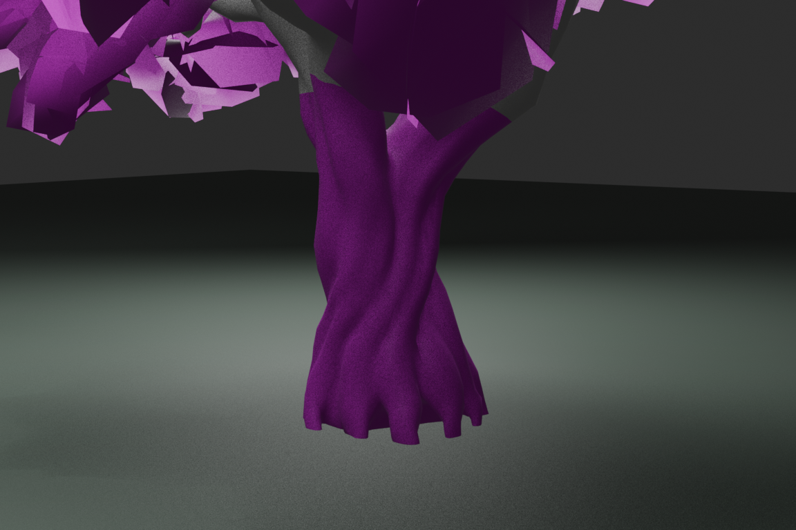
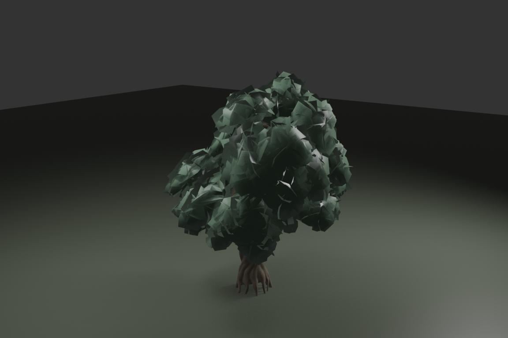
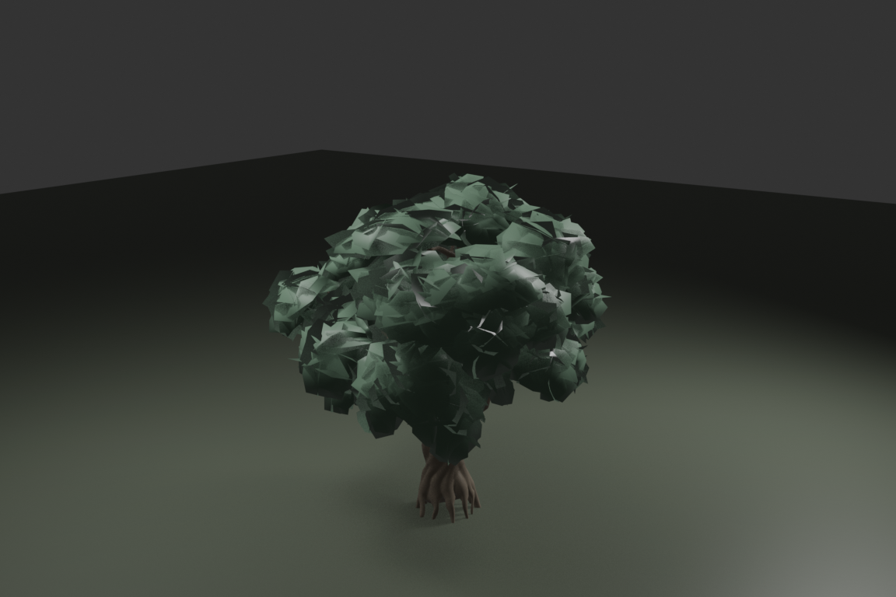

通常樹木の3形状
無料森林パックの同一樹木をBlenderで個別にメッシュ変形。枝・葉・根元を含む各LODは共通のUV・材質構成。既存樹木の位置は維持し、シルエットを3タイプに振り分けました。



Blenderレンダリングは形状比較用。Unityでは元の森林パックと同じ樹皮・葉素材を使用。実際のプレイ画面はWebGL版、全体比較は森林画質比較ページで確認できます。
無料森林パックの同一樹木をBlenderで個別にメッシュ変形。枝・葉・根元を含む各LODは共通のUV・材質構成。既存樹木の位置は維持し、シルエットを3タイプに振り分けました。



Blenderレンダリングは形状比較用。Unityでは元の森林パックと同じ樹皮・葉素材を使用。実際のプレイ画面はWebGL版、全体比較は森林画質比較ページで確認できます。